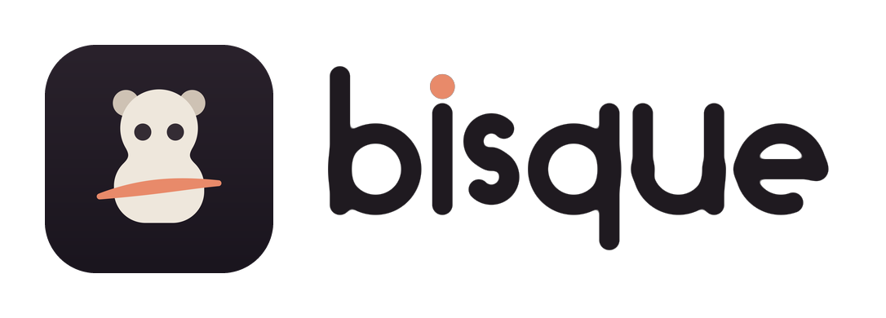

Bisque privacy
Bisque is an offline creative toy. We do not collect your artwork, personal information or usage analytics. There are no accounts, ads or third-party SDKs. The only network contact the app makes itself is with Apple’s App Store, to check and offer Bisque Family.
What stays on your device
Bisque saves the current painted surface, material texture, clothes, selected tools, orientation, colour history and the generated creature’s seed and original day in its app storage. The random seed creates the creature; it is not a device identifier. Undo keeps up to three recent artwork changes during a session and can be cleared when the device needs memory.
The daily creature and the shelf
Each day Bisque generates a new creature on the device. When a new day begins, the previous day’s painted creature moves to the shelf (the stacked-cards button), where it can be reopened. For each shelf creature, Bisque stores a compressed copy of its artwork and a small thumbnail picture in its own app storage. Shelf entries contain no names and no account or device identifiers, and they are not sent anywhere. The free shelf shows the last 7 days; with Bisque Family the shelf keeps every creature on this device.
The optional Apple Watch connection
If you use Bisque on an iPhone with a paired Apple Watch, Apple’s WatchConnectivity service transfers the creature’s random seed, original day, three mood values derived from the colours and a painting-progress value. The Watch keeps the latest received update so it can show a simple companion when the phone app is closed. Painted textures and clothes are not sent. None of this data is sent to a Bisque server.
Bisque Family purchases
Bisque Family is offered only in the grown-ups’ section, behind the adult maths challenge; the play area shows no prices. It is available as a monthly or yearly subscription or as a one-time Lifetime purchase. Purchases, subscriptions, free trials, renewals, refunds and Family Sharing are handled by Apple through the App Store and your Apple Account. Apple processes the payment. We do not receive your payment details, name, email address or other personal information; App Store Connect gives us only Apple’s sales and subscription reports, which do not identify you.
To show the plans and to know whether Bisque Family is active, Bisque uses Apple’s StoreKit framework, which contacts the App Store. Bisque also reads the app’s own App Store purchase record on the device to see whether Bisque was bought before Bisque Family existed, so earlier buyers keep Family for life. This information stays between your device and Apple and is not sent to a Bisque server. Apple’s handling of it is described in Apple’s privacy policy. Deleting Bisque does not cancel a subscription; manage or cancel it in Settings under your Apple Account.
Bring it home files
With Bisque Family, a grown-up can turn today’s creature into an A4 PDF poster, a colouring page, a sticker sheet or a 60 mm STL file for 3D printing. These files are created on the device and contain no name or personal information. They leave the app only when a grown-up chooses a destination in the system share sheet in the grown-ups’ section, for example printing, saving to Files or AirDrop. Bisque does not upload them anywhere itself, and it does not request photo-library access to make them.
No tracking or requested sensitive permissions
Bisque contains no advertising or analytics services. It does not request camera, microphone, location, contacts, photo-library, notification or tracking access. Its privacy manifest declares no tracking and no collected data, and lists only UserDefaults and file-timestamp access within the app’s own storage. No personal information is requested by the app.
Saving, backups and deleting
There is no Bisque account, server backup or artwork sync between your iPhone and iPad. Your operating system may include app data in your own device backup according to your settings. Holding Start over clears the current paint and clothing but retains the creature and preferences; it is not a complete data-deletion command. Remove Bisque and its app data to delete the local artwork, the shelf and preferences. Remove the Watch app and its data to remove the cached companion. Backups are managed separately in your Apple settings.
Links and support
Privacy and support links, and the Bisque Family offer, are available only after an adult maths challenge. The links open the system browser. These public pages are hosted by GitHub Pages; visiting them involves ordinary web requests handled by the browser and hosting provider. If you email us, we receive the information you choose to send and use it to respond. Please do not include sensitive information about a child.
Contact
For privacy questions or a request about support correspondence, email hello@norea.studio.
Updated 19 October 2026 (version 1.2).